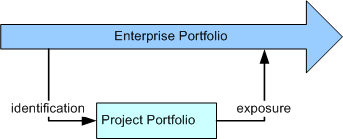
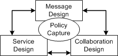
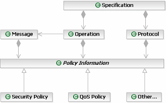

|
Reuse Enterprise Service Portfolio
|
One of the often stated advantages to the use of a Service-Oriented Architecture (SOA) is the ability for services to
represent reusable assets across the enterprise, rather than the development of components only within the scope of a
single application.This enterprise view is important because it embodies the notion that a truly service-oriented
architecture for IT provides all infrastructure and business capabilities as services and that the applications
developed by the enterprise reuse capabilities from the portfolio of services.
So, in starting a project it is important to know if you are developing services as part of the portfolio or whether
you are developing application functionality that uses these services. For example, the development of a portal site
for customers to access their account information is an application-development project using services in the portfolio
for customer information, account information, offers, and more. In each case, the use of the portfolio has different
implications; the service designer is describing their service specification and publishing it as a part of the
portfolio. This specification allows application developers to understand the interaction requirements for the service.
The service implementer may now use the same service specification to develop one or more implementations of the
service, ensuring that the implementation conforms to the specification. The following diagram demonstrates the
relationship between the enterprise-wide service portfolio and the project's portfolio.

For more information see the concept Service
Portfolio.
|
Use Design Patterns and Mechanisms
Use design patterns and mechanisms as suited to the service being designed and in accordance with project design
guidelines. Incorporating a pattern or mechanism is effectively performing many of the subsequent steps in this task,
but in accordance with the rules defined by the pattern or mechanism.
Note that patterns and mechanisms are typically incorporated as the design evolves and not just as the first step in
this task. They are also frequently applied across a set of model elements, rather than only to a single element.
The transformation of a service into its realization often involves a set of patterns, some of which are described in
the Guideline: Service Component Patterns.
|
Describe the Logical Organization of the Solution
|
It is frequently useful to organize your thinking in terms of different views into a system and how the services you
are developing fit into these views. In defining the logical organization views, it is important that assignment of a
service into a view does not imply ownership in a Unified Modeling Language (UML) sense or containment; that is, that
the same service shall be able to participate in multiple logical views. The organizational views are worth laying out
in the model ahead of the service development or at least the first iteration of these views so services can be
assigned to views as identified. In the service model, we use an model element Service Partition to represent an aspect in a view. These
partitions can be used to represent any number of different perspectives of the solution, but do not imply ownership of
the services assigned to them. For more information, see the concept Solution Partitioning.
It is also possible that these partitions, at least those representing key viewpoints, may reside in models separate
from the services themselves, allowing for the partition models to evolve independently.
|
Describe Service Elements
|
As is always the case when looking at modeling software systems, there is a plurality of entry points to any such
model, any number of representations that can be used, and of course many methodologies one might apply. In most cases,
these entry points are due to specific concerns in either the technology or business domains that have to be addressed.
These concerns are important enough to act as starting points because understanding them and the interaction between
them is critical to achieving success.
It was our observation that there are a small number of such concerns in developing service-oriented solutions; the
following diagram represents these primary concerns as specific design tasks. While noting that each of these concerns
can act as the starting point for service design, and that each approach tends to be well optimized for a certain class
of services, it is most likely that any large project would use a combination of approaches in the identification and
design of services.

For more information see the Activity: Existing Asset Analysis, which presents a set of detailed techniques
supporting these approaches.
In this approach, the focus is very much on the service domain. Techniques such as domain engineering or
object-oriented analysis and design provide much insight into the development of abstract domain models. This focus
generally produces highly reusable models for message schema. The service design is usually a secondary activity
although it is sometimes done in parallel. In Electronic Data Interchange (EDI), for example, there is no real notion
of a service interface because EDI systems usually have a single global inbox and outbox for messages.
An example of such an approach might be in the traditional business-to-business arena, typified by EDI standardization.
In this case, the focus of the design activity is the development of message schema agreed upon in some industry or
other scope and is deemed to be representative of the schema of a class of messages, for example, and industry
standards such as ACORD, SWIFT, and RosettaNet (see Task:
Message Design).
In this approach, the designer is concerned with exposing, as a service or set of services, functionality expected of
the business or application. In this case, we do not necessarily know what the client of the services will choose to do
with our service, but we do know the kinds of interactions such clients will expect. Therefore, messages tend to be
secondary and are developed in response to the requirements of an operation.
An example of this approach would be the Web Services APIs presented by companies such as Amazon and
eBay. Such service interfaces do not impose a business process on the client. In most cases they do not even
impose required interfaces on the client, but they expose the operations of their respective service providers in a
clear and intuitive way to third-party developers.
As mentioned above, service-centric modeling often lends itself well to a use-case driven approach by understanding the
needs of actors, the external clients of the service, and providing operations that support these needs, operations
such as browsing catalogs, adding items to a shopping cart, checking out, and so on.
In a collaboration design, the focus is on the collaboration of two or more services; this is very much a process view
of the services and is related to more traditional business modeling than it is to a software development activity. In
this approach, services are seen as fulfilling roles in the collaboration and the service specification is therefore
the set of responsibilities defined for the role across one or more collaborations.
Such an approach would be recognizable to those that have been involved in the development of RosettaNet Partner
Interchange Processes (PIPs) or in the development of the OAGIS standards, although the collaborations are less than
complete in these cases. Such an approach would be common within a business in terms of either business-process design
or in business-integration activities where the components of an IT system are exposed as services.
In this case, it is usually the case that the service specification can be derived directly from the collaboration, but
this approach tends to focus less on message content leading to a requirement for a hybrid approach for completeness.
Policy is a broad term that we use here to cover statements or constraints that can be considered non-functional
requirements. At the level of this model, we have to realize that we do not want the model to be populated with
detailed statements about technical information but more realistically, we capture the intent of the system in regard
to these requirements. For example, we may know that a certain message has to be transmitted and kept private as our
customers' personal details are included; we want to capture the intent that the message be private, not that we
require data encryption using AES 128 bit encryption over a canonical XML data set with X.509 certificates for public
key encryption, mainly because very few people will know what this means, let alone be able to specify it in a model at
this level of abstraction (see Task:
Identify Security Patterns).
The following diagram demonstrates the association of policy with the elements of the Service Model. Note that policy information may be attached to
information other than the specification components identified below, although this is the primary area of interest.

For more information on modeling security policy, see the white paper Modeling Security Concerns in Service-Oriented Architecture.
|
Model Service Dependencies
Another key aspect of the Artifact: Service Model which must be developed during specification
is the capture of the dependencies between services. As
a part of the service model, a number of dependencies are naturally captured. These can be as obvious as the
relationship between a service and its specification or more complex, such as the logical relationship between two
independent services because they both implement the same specification. These dependencies (described in Artifact: Service Model and Report: Service Dependencies) are important in understanding the ability to deploy a
service as an autonomous unit and will affect its evolution over time as dependencies become constraints on the service
ability to change.
Service dependencies describe the relationships between services that arise in the larger context of how they will be
used. When a service is formed from a composition of other services, the composing service depends on the composed
services. When services are used in the context of a business process, there is a process related dependency that
arises from the inherent sequence of steps in the business process that dictates the order in which services will be
used.
-
Functional dependencies/Composite Dependency that arise from composition of multiple services.
-
-
Example: Reserve Vehicle will depend on Check rates and Make Reservation for its functionality
-
Temporal dependency where there is some pre- or post- condition or processing requirement that will need to
be accounted for in compositions or choreographies.
-
-
Pre-condition dependency - i.e. another service invocation must have executed successfully before
the current invocation can begin execution.
-
Processing dependency - i.e. another service invocation is required to complete the successful
execution of the current service.
-
Post-condition dependency - this appears in cases where a service requires another service
invocation after its execution.
These dependencies may often be a part of the decision process a service client has to go through in choosing to reuse
a service, particularly if there are multiple implementations to chose from.
The kinds of dependencies/associations in the service model that are important as listed below.
-
The relationship between a service and the Service Providers that implements it.
-
The relationship between a service and the Service Specification it implements.
-
The relationship between a service and any Service Specification it requires.
-
The relationship between a service and any Service Channel that connects it to other services and therefore the
service on the other end of the channel.
-
The relationship between a service and any Service Partition in which the service appears.
It is therefore important that all service specifications be complete, not only with respect to the operations and
messages they provide, but also any dependencies such as required interfaces for callback operations. The report Service Dependencies provides an overview of the important dependencies for the
service model.
|
Model Service Composition and Flows
Services are often composed of other, existing, services and in some cases technology such as choreography can allow
for a service to be developed without explicit code as purely a composition of existing services. During specification,
services that are reusing elements already in the enterprise portfolio, and have documented their dependencies on these
services, may be considered as composite services if their functionality relies upon the function of a composed service
and if the composite may not be deployed without access to the composed service(s).
In some SOA frameworks, a Business Process Layer is intended to manage only choreographed composite services
where complex processes are provided as managed choreographies of more fine-grained services. In this case the Business
Process Execution Language for Web Services (BPEL4WS) can be used as a tool for the development of composite services,
service flows and business process layers.
Thus, two kinds or composite services may be identified:
-
Hardwired composite services - these are characterized by low flexibility, owing to pre-defined
flow and control of services where the flow and control is not externalized. These types of services have
attractive Qualities of Service attributes such as performance.
-
Loosely wired composite services - these are characterized by high flexibility where composing
services into business processes is accomplished by externalizing flow and control. The flow description of the
composition is externalized. This type of composition exploits modeling tools, dynamic variability through rules,
and static variability through modeling. Composition using BPEL is an example.
For more information see Concept: Service Composition and Choreography as well as Guideline: Service Realization - BPEL services in a SOA application for a
project-specific example.
|
Document Non-Functional Requirements
Utilizing a Service-Oriented Architecture provides the opportunity to choose a Artifact: Service Provider based not only on the functionality it
provides, but on the Qualities of Service (QoS) that it may guarantee. One of the reasons for changing a Service
Provider may often be a result of a change in non-functional requirements, necessitating a new level of QoS not
currently supported by an existing provider. It may also result from the degradation in QoS expected by the Service
Consumer. A Service-Oriented Architecture allows this agility at a lower cost, in general, than other architectural
styles.
QoS can be viewed from two perspectives: that of the Provider and Consumer. The Service Provider guarantees to
provide and maintain a quality of service for each of its services or group of its services. The Service Consumer, on
the other hand, “shops around” for the desired QoS and chooses a Provider based on QoS. It is also important to note
that in commercial settings where the Consumer and Provider enter into a legal contract over the use of the service,
these quality of service guarantees are reified in Service Level Agreements, frequently with penalties associated with
the failure of a Provider to meet such agreements.
Therefore, it is very important to clearly specify the non-functional requirements required by the consumer (e.g., cost
of transaction, performance, availability, security, etc.) for a service or set of services. In this task of Service
Specification, we identify the non-functional requirements for the desired QoS. The non-functional requirements will be
used to commit resources for service components that offer the services and to fund the realization and maintenance of
service components that will ensure the delivery of the QoS over time. Key architectural decisions must be made to
ensure that the promised quality of service based on the non-functional requirements is achieved.
The manner in which Non-Functional Requirements are attached to the Artifact: Service Specification is not defined by this guidance.
Neither are there bounds set on what constitutes such a requirement, obviously QoS, Security have been mentioned above,
examples might include:
-
Availability (i.e. mean time between failure)
-
Operational window (is there ever a time when the service is not expected to be used?)
-
Response time (how quickly does the service need to respond to a request)
-
Peak throughput (how many requests for the service can arrive per unit of time – e.g. per second, per minute, per
hour)
|
Document State-Management Requirements
Although individual services are considered stateless, compositions often have requirements to maintain state
information across the invocation of the composed services. The choreographer of the services is often responsible for
the management of state. Alternatively, a component that implements and realizes multiple related services or
operations on services may need to maintain state between invocations for performance reasons.
State Management in SOA environment can be considered to fall into three main categories:
-
Transaction State - where a service has an open transaction during a conversation with a client.
-
Security State - where a security context is held open during a conversation with a client.
-
Functional State - where the conversation with a client involves a number of related operations.
For more information see the Guideline: State Management for Services.
|
|